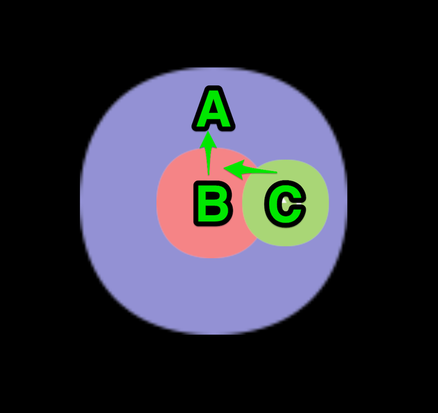

System built-in events
As stated in the last file, cc.Node has a whole set of event listener and dispatch mechanisms. Based on this mechanism, we will provide some basic system events. This file will introduce how to use these events.
System events follow the general register method, developers can register event listener not only by using the enumeration type but also by using the event name directly, the definition for the event name follows DOM event standards.
// Use enumeration type to register
node.on(cc.Node.EventType.MOUSE_DOWN, function (event) {
console.log('Mouse down');
}, this);
// Use event name to register
node.on('mousedown', function (event) {
console.log('Mouse down');
}, this);
Mouse event type and event object
The Mouse event will only be triggered on desktop platforms, the event types the system provides are as follows:
| enumeration object definition | corresponding event name | event trigger timing |
|---|---|---|
cc.Node.EventType.MOUSE_DOWN |
'mousedown' | trigger once when mouse down |
cc.Node.EventType.MOUSE_ENTER |
'mouseenter' | when the mouse enters the target node region, regardless if it is down |
cc.Node.EventType.MOUSE_MOVE |
'mousemove' | when the mouse moves in the target node region, regardless if it is down |
cc.Node.EventType.MOUSE_LEAVE |
'mouseleave' | when the mouse leaves the target node region, regardless if it is down |
cc.Node.EventType.MOUSE_UP |
'mouseup' | trigger once when the mouse is released from the down state |
cc.Node.EventType.MOUSE_WHEEL |
'mousewheel' | when the mouse wheel rolls |
The important APIs of mouse events（cc.Event.EventMouse）are as follows（cc.Event standard events API excluded）：
| function name | returned value type | meaning |
|---|---|---|
getScrollY |
Number |
get the y axis distance wheel scrolled, effective only when scrolling |
getLocation |
Object |
get mouse location object which includes x and y properties |
getLocationX |
Number |
get X axis location of the mouse |
getLocationY |
Number |
get Y axis location of the mouse |
getDelta |
Object |
get the distance object the mouse moves since last event, which includes x and y properties |
getButton |
Number |
cc.Event.EventMouse.BUTTON_LEFT or cc.Event.EventMouse.BUTTON_RIGHT or cc.Event.EventMouse.BUTTON_MIDDLE |
Touch event types and event objects
Touch event can be triggered in both mobile platforms and desktop platforms. This is designed to serve developers to debug on desktop platforms better, all you need to do is listen to touch events, touch events from mobile platforms and mouse events from desktop can be responded to at the same time. Touch event types that the system provides are as follows:
| enumeration object definition | corresponding event name | event trigger timing |
|---|---|---|
cc.Node.EventType.TOUCH_START |
'touchstart' | when the finger touches the screen |
cc.Node.EventType.TOUCH_MOVE |
'touchmove' | when the finger moves in the target node region on screen |
cc.Node.EventType.TOUCH_END |
'touchend' | when the finger leaves screen in the target node region |
cc.Node.EventType.TOUCH_CANCEL |
'touchcancel' | when the finger leaves screen outside the target node region |
The important APIs of touch event（cc.Event.EventTouch）are as follows（cc.Event starndard event API excluded）:
| API name | type | meaning |
|---|---|---|
touch |
cc.Touch |
contact object related to the current event |
Note, touch events support multi-touch, each touch spot will send one event to the event listener. You can get all the information of touch spot from cc.Touch API:
| function name | return value type | meaning |
|---|---|---|
getID |
Number |
identification ID of the touch spot, can be used in multi-touch to track the touch spot |
getLocation |
Object |
get location object of the touch spot which includes x and y properties |
getLocationX |
Number |
get X axis location of the touch spot |
getLocationY |
Number |
get Y axis location of the touch spot |
getDelta |
Object |
get the distance object the touch spot moves since the last event, which includes x and y properties |
getStartLocation |
Object |
get the location object the where touch spot gets down which includes x and y properties |
getPreviousLocation |
Object |
get the location object of the touch spot at the last event which includes x and y properties |
Mouse and touch event bubbles
Mouse and touch events all support the event bubbles on the node tree, take the pictures below as an example:

In the scene shown in the picture, node A has a child node B which has a child node C. Suppose the developer set the touch event listeners for all these three nodes, when the mouse or finger was applied in the node B region, the event will be triggered at node B first and the node B listener will receive the event. Then the node B will pass this event to its parent node, so the node A listener will receive this event. This is a basic event bubble process.
When the mouse or finger presses in the node C region, the event will be triggered at node C first and notify the registered event listener at node C. Node C will notify node B of this event, and the logic in node B will check whether the touch spot is in its region. If the answer is yes, it will notify its listener, otherwise, it will do nothing. Node A will receive the event then, since node C is completely in node A, the event listener registered in node A will receive the touch down event. The above process explains the event bubble process and that the logic decides whether to dispatch the event or not based on the node region.
Except for the node region to decide whether to dispatch the event or not, the bubble process of mouse and touch events is no different than the general events. So, the function stopPropagation to call event of stopPropagation can stop the bubbling process actively.
Other events of cc.Node
| enumeration object definition | corresponding event name | event trigger timing |
|---|---|---|
| null | 'position-changed' | when the location property is changed |
| null | 'rotation-changed' | when the rotation property is changed |
| null | 'scale-changed' | when the scale property is changed |
| null | 'size-changed' | when the size property is changed |
| null | 'anchor-changed' | when the anchor property is changed |
| null | 'color-changed' | when the color property is changed |
| null | 'opacity-changed' | when the transparency property is changed |